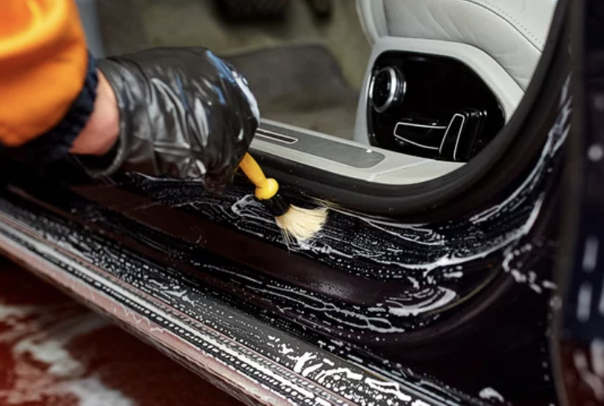
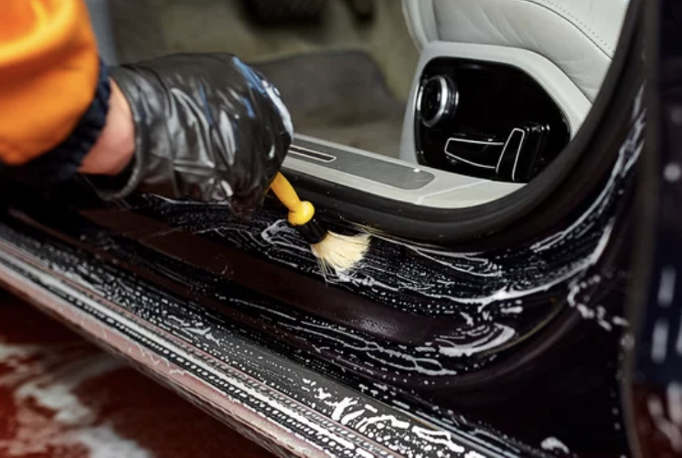
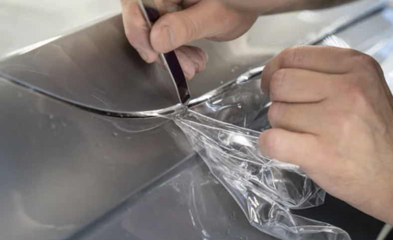
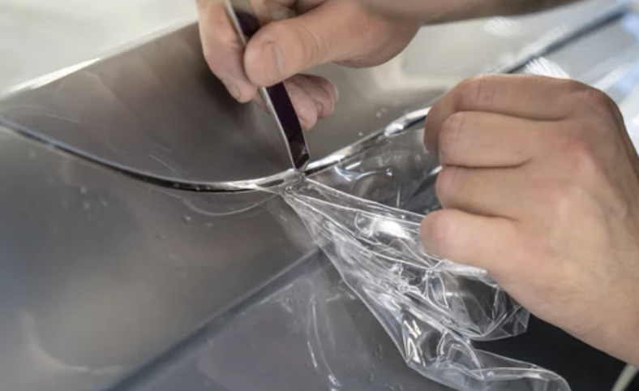
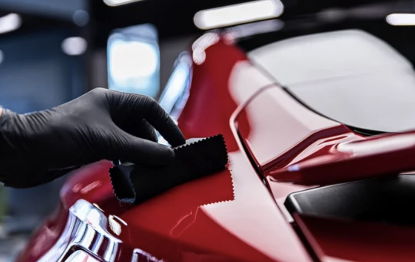
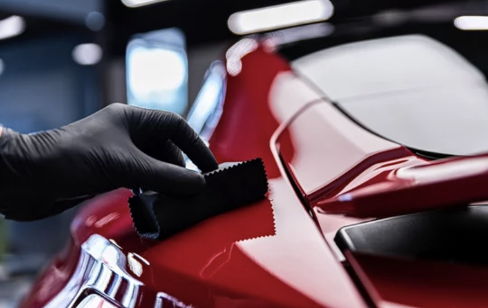
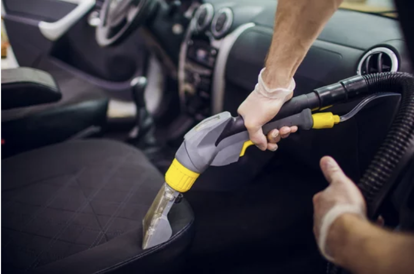
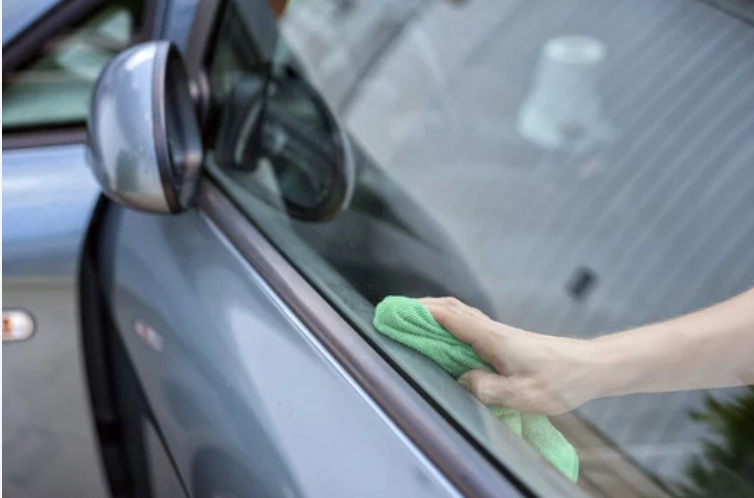
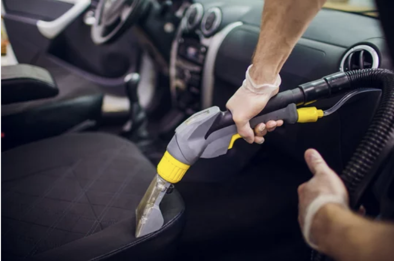
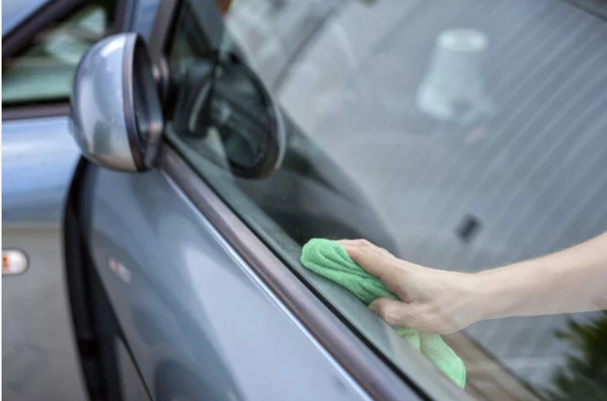

Le detailing automobile sur devis est une prestation sur mesure, adaptée à l’état réel du véhicule et aux attentes du client. Chaque voiture étant unique, un diagnostic précis est réalisé afin d’identifier les défauts de la carrosserie (micro-rayures, oxydation, hologrammes) et de l’intérieur (usure, taches, plastiques ternis). En fonction de ce diagnostic, un programme personnalisé est établi : lavage approfondi, décontamination, polissage, correction de peinture, rénovation intérieure et protections adaptées. Le devis garantit une transparence totale, un travail ciblé et un résultat haut de gamme, visant à restaurer, protéger et sublimer le véhicule dans les moindres détails.

 

Les travaux de carrosserie sur devis permettent de remettre en état un véhicule suite à des dommages esthétiques ou structurels, tout en respectant les standards de qualité d’origine. Après une évaluation précise de la carrosserie, un devis personnalisé est établi en fonction des réparations nécessaires : redressage, débosselage avec ou sans peinture, réparation des éléments endommagés, préparation des surfaces et mise en peinture professionnelle. Chaque intervention est réalisée avec soin afin de garantir un alignement parfait, une finition soignée et une teinte fidèle à celle du constructeur. L’objectif est de restaurer l’aspect esthétique et la valeur du véhicule, tout en assurant durabilité et sécurité.


Remplacement de pare-brise rapide et sécurisé, avec vitrage conforme aux normes constructeur.
Prenez rendez-vous et repartez l’esprit tranquille, on s’occupe de tout.

Le polissage automobile est une étape essentielle pour corriger les défauts de la carrosserie. Il permet d’éliminer ou d’atténuer les micro-rayures, traces de lavage, oxydation et marques circulaires, en travaillant la surface du vernis de manière contrôlée. Cette opération redonne à la peinture sa profondeur, sa netteté et son éclat d’origine. Le lustrage, quant à lui, intervient en finition. Il a pour objectif d’amplifier la brillance, d’uniformiser le rendu et d’apporter une protection légère à la carrosserie. Le lustrage ne corrige pas les défauts profonds, mais sublime le résultat du polissage en laissant une surface lisse, brillante et visuellement parfaite. Associés, le polissage et le lustrage permettent de raviver l’esthétique du véhicule, d’améliorer sa présentation et de valoriser son apparence, tout en préparant idéalement la carrosserie à une protection (cire ou traitement céramique).
 

Le film PPF (Paint Protection Film) est une protection transparente haut de gamme conçue pour préserver la carrosserie des agressions du quotidien. Appliqué sur les zones exposées ou sur l’ensemble du véhicule, il protège efficacement contre les impacts de gravillons, rayures légères, frottements, insectes, résine, sel et UV. Ce film est quasi invisible, ne modifie pas la teinte d’origine et conserve la brillance du véhicule. Grâce à sa technologie auto-cicatrisante, les micro-rayures superficielles disparaissent sous l’effet de la chaleur (soleil ou eau chaude). Le PPF agit comme un véritable bouclier, prolongeant la durée de vie de la peinture et maintenant la valeur du véhicule. La pose est réalisée sur une carrosserie parfaitement préparée, garantissant une finition précise, une excellente tenue dans le temps et une protection durable, idéale pour les véhicules neufs, sportifs ou haut de gamme.
 

La pose d’un traitement céramique est une protection haut de gamme destinée à préserver et sublimer la carrosserie du véhicule sur le long terme. Après une préparation minutieuse incluant lavage approfondi, décontamination et, si nécessaire, polissage, le revêtement céramique est appliqué à la main, panneau par panneau. Ce traitement crée une barrière protectrice résistante contre les UV, la pollution, les produits chimiques, les insectes et les micro-rayures légères. Il offre également un effet hydrophobe puissant, facilitant le nettoyage et limitant l’adhérence des saletés. Le rendu visuel est immédiatement amélioré avec une brillance intense, une profondeur de couleur renforcée et une surface parfaitement lisse. Le traitement céramique permet de prolonger la durée de vie de la peinture, de simplifier l’entretien du véhicule et de conserver un aspect neuf plus longtemps. C’est une solution idéale pour les véhicules neufs, récents ou rénovés, recherchant une protection durable et un rendu esthétique premium.
Le covering automobile consiste à appliquer un film adhésif spécifique sur tout ou partie du véhicule afin d’en modifier l’apparence sans peinture définitive. Il permet de changer la couleur, la finition (mat, brillant, satiné, carbone, chrome…) ou de personnaliser le véhicule avec un design unique, tout en protégeant la peinture d’origine. La pose est réalisée par des professionnels, sur une carrosserie parfaitement préparée, garantissant une finition propre, précise et durable. Le film protège la peinture contre les micro-rayures, les UV et les agressions extérieures du quotidien. Totalement réversible, le covering peut être retiré sans endommager la peinture, ce qui en fait une solution idéale pour la personnalisation, le leasing ou la revente. Le covering est une alternative moderne, esthétique et flexible pour personnaliser, protéger et valoriser son véhicule, qu’il s’agisse d’un covering total, partiel ou de détails spécifiques.
Nous utilisons uniquement des produits et outils professionnels, sans machines automatisées. Chaque prestation est réalisée manuellement, pour un résultat précis, soigné et parfaitement adapté à votre véhicule.
Techniciens certifiés et passionnés d'automobile.Nous nous adaptons aux contraintes et disponibilités de nos clients en privilégiant les rendez-vous planifiés, afin de garantir un service fluide et sans attente. Un lavage intérieur et extérieur classique est réalisé en environ 1 heure, tout en conservant un haut niveau de qualité et de finition. Chaque intervention est organisée pour être rapide, efficace et maîtrisée, sans jamais sacrifier le soin apporté au véhicule.
La satisfaction du client est au cœur de notre priorité. Chaque prestation est réalisée avec soin, précision et exigence, dans le respect du véhicule et des attentes du propriétaire.
Chez PRO GLASS & WASH, chaque véhicule est traité comme le nôtre. Entreprise familiale à taille humaine, nous privilégions un travail artisanal, réalisé à la main, avec une attention particulière portée aux détails et aux finitions.


 


